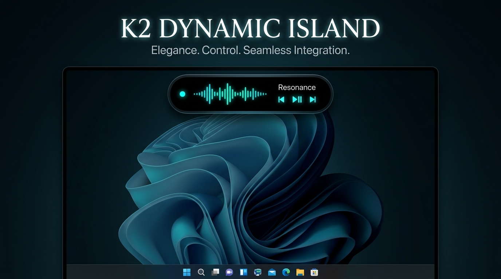

Building Modern Software & AI Solutions
Passionate about crafting high-performance applications, automation systems, and clean user experiences. Always exploring cutting-edge developer tools and modern web ecosystems.
Technologies & Specialties
C++ / Win32
WebView2
Python
JavaScript
TypeScript
React
Node.js
Tailwind CSS
Git & GitHub
Blender 3D
Featured Software
v1.1.2
K2 Dynamic Island
A sleek, modern floating desktop capsule for Windows 10 & 11. Features real-time audio wave visualization, file drag-and-drop inspection, system metrics, and anti-tamper security.
